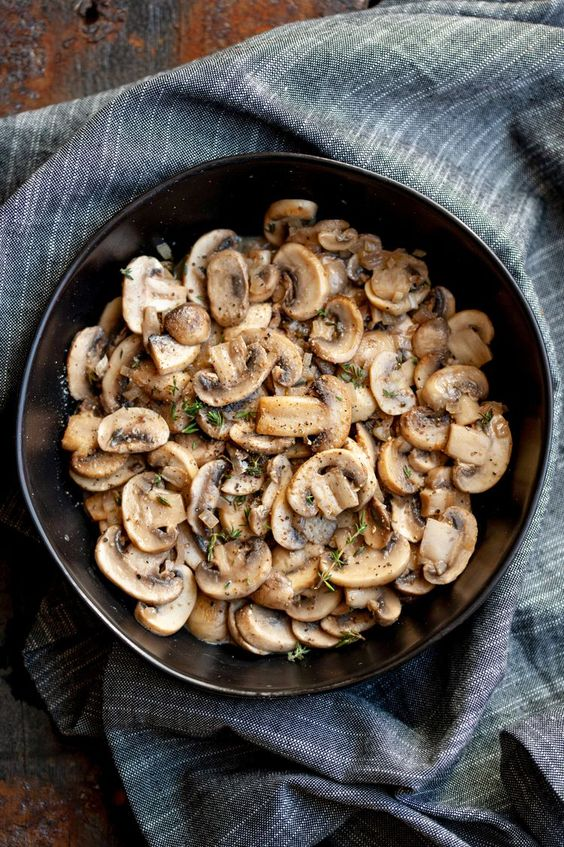
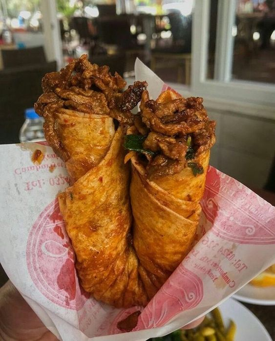

Back
Beverage
Dessert

Mushroom Saute
Ingredients:
300 grams of mushrooms
1 onion
2 cloves of garlic
2 tablespoons of butter or olive oil
Salt
Black pepper
Parsley (optional, for garnish)
Instructions:
Wash the mushrooms and slice them thinly.
Chop the onion and garlic.
Heat butter or olive oil in a pan.
Add chopped onions and sauté until they turn pink.
Add the chopped garlic and sauté until fragrant.
Add the mushrooms to the pan and sauté until they release and reabsorb their liquid.
As the mushrooms cook, they will change color as they lose their moisture. Add salt and black pepper.
Sauté the mixture, stirring occasionally, until the mushrooms are lightly browned.
Remove the cooked mushroom sauté from the heat.
Transfer to a serving plate and garnish with finely chopped parsley if desired.

Tantuni
Ingredients:
300 grams of beef (you can also use chicken or lamb)
2 tablespoons of vegetable oil
2 medium-sized onions (thinly sliced)
2 cloves of garlic (crushed)
1/2 teaspoon cumin
1/2 teaspoon red pepper flakes
Salt
Black pepper
Juice of half a lemon
4-5 pieces of lavash bread
Lettuce leaves (optional)
Tomatoes (optional)
Pickles (optional)
Sumac (optional)
Instructions:
Thinly slice or dice the beef.
Heat the vegetable oil in a pan and sauté the beef until the liquid is absorbed.
Add the sliced onions and sauté until they turn pink.
Add crushed garlic, cumin, red pepper flakes, salt, and black pepper. Sauté the mixture, stirring well.
Squeeze the lemon juice into the mixture, stir, and remove from heat.
Warm the lavash bread.
Spread the tantuni mixture onto the warm lavash bread.
Optionally, add lettuce leaves, tomatoes, pickles, and sumac for extra flavor.
Roll up the lavash bread into a wrap.
Serve the tantuni wraps while they are still warm.